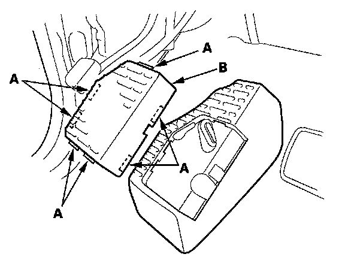
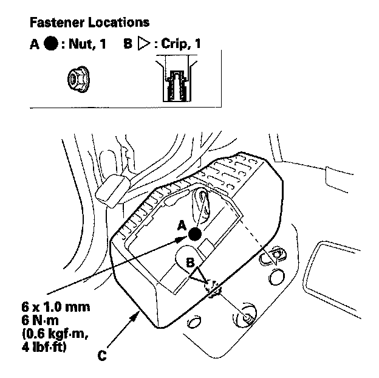
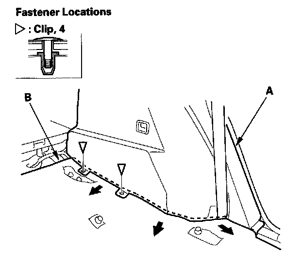
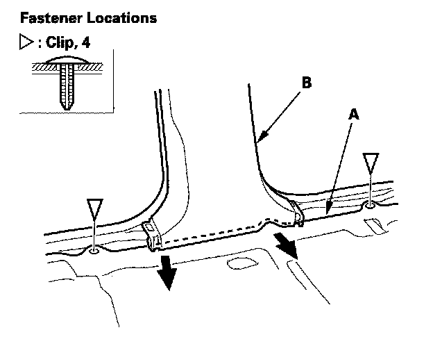
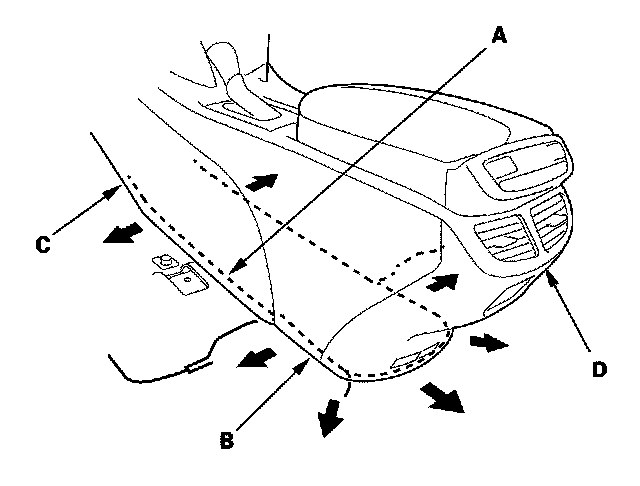
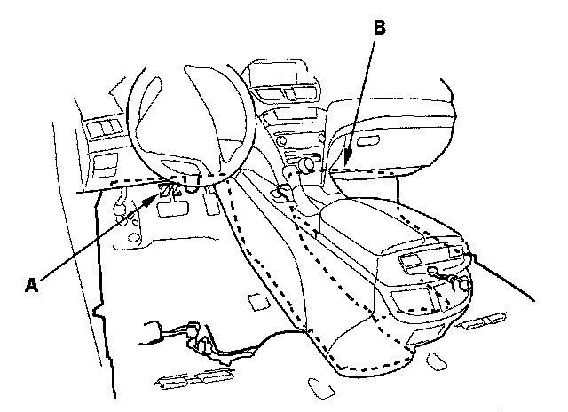
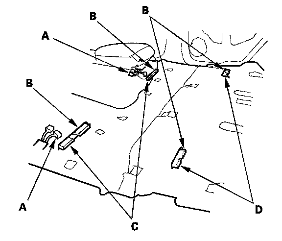

Carpet: Service and Repair
Carpet ReplacementSpecial Tools Required
KTC trim tool set SOJATP2014 *
* Available through the American Honda Tool and Equipment Program
SRS components are located in this area. Review the SRS component locations and the precautions and procedures before doing repairs or service.
NOTE:
- Put on gloves to protect your hands.
- Use the appropriate tool from the KTC trim tool set to avoid damage when removing components.
- Take care not to damage, wrinkle or twist the carpet.
- Be careful not to damage the dashboard and other interior trim pieces.
1. Remove these items:
- Front seats, both sides
- Second row seats, both sides
- Third row seats, both sides
- Front door sill trim, both sides
- Rear door sill trim, both sides
- Kick panels, both sides
- Driver's dashboard undercover
- Passenger's dashboard undercover
- Steering joint cover

2. Detach the hooks (A), then remove the footrest plate (B).

3. Remove the nut (A). Using a 6 mm socket wrench, release the clip (B), then remove the footrest (C).

4. Remove the clips fastening both rear side trim panels (A). Pull out the edge of the carpet (B) from under the panels.

5. Remove the clips fastening the edge of the carpet (A) from both front door sill areas and both rear door sill areas. Pull out the edge of the carpet from under the B-pillar lower trim (B).

6. Pull out the middle edge of the carpet (A) from under the center console (B), driver's/passenger's console trim (C), and console rear trim (D).

7. Release the fastener (A) on the front edge of the carpet (B), then pull back the carpet from under the dashboard.
8. Remove the carpet.

9. Install the carpet in the reverse order of removal, and note these items:
- Take care not to damage, wrinkle or twist the carpet.
- Make sure the seat harnesses (A) are routed correctly.
- Slip the slits (B) in the carpet over the rear heater duct (C) and the third row seat heater duct (D).
- Slip the carpet under the center console, both B-pillar lower trim, and both rear side trim panels properly.